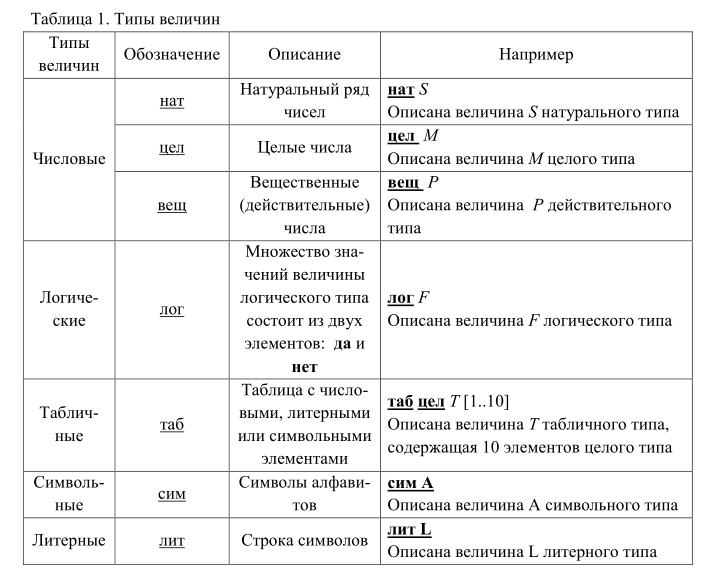
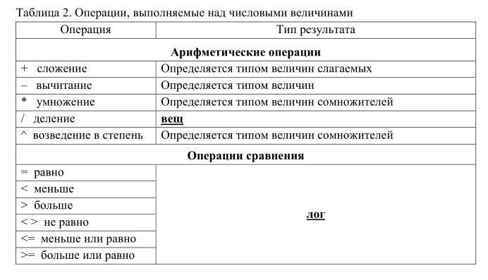

|
В интуитивном
(неформальном) понимании «алгоритм» – это описание
вычислительного процесса.
АЛГОРИТМ, алгорифм, – точное предписание, которое задает
вычислительный процесс (называемый в этом случае
алгоритмическим), начинающийся с произвольного исходного данного
(из некоторой совокупности возможных для данного алгоритма
исходных данных) и направленный на получение полностью
определяемого этим исходным данным результата.
В качестве рабочего определения понятия
«алгоритм» используем определение Международной организации по
стандартизации (документ СТ ИСО 2382/1 – 84):
АЛГОРИТМ (ALGORITHM) – конечный
набор предписаний, определяющий решение задачи посредством
конечного количества операций.
Характерные свойства алгоритма:
1) дискретность – алгоритм состоит из отдельных команд,
2) определенность – каждая команда алгоритма определена и указан
способ ее выполнения,
3) результативность – алгоритм всегда приводит к получению
результата,
4) правильность – сам алгоритм правильный и применение
правильное,
5) массовость – алгоритм разработан для решения класса
однотипных задач,
6) конечность – результат достигается за конечное число шагов.
Совокупность задач, к которым применим алгоритм, называется
областью применимости алгоритма.
Исполнитель
алгоритмов
Алгоритм всегда разрабатывают для конкретного исполнителя.
Исполнитель алгоритмов
– это объект (кто или что), формально исполняющий алгоритмы.
Исполнитель характеризуется системой команд (СКИ) и средой, в
которой исполняет алгоритмы. Если исполнитель получает команду,
не входящую в его
систему команд, то он сообщает «не понял». Если исполнитель
получает команду, которую не может исполнить по какой-либо
причине, то он сообщает «не могу».
В теории алгоритмов
исполнители: машины Поста и Тьюринга. В
практике – исполнители: ЭВМ, роботы.
Величины (данные
которые обрабатывает алгоритм)
Информация предоставляется исполнителю в форме величин. Величина
в информатике – это объект любой природы: число, текст, таблица,
график и т. д.
Основные характеристики величин:
1) имя величины,
2) вид величины,
3) тип величины,
4) значение величины.
Имя величины
(имена переменных)
С точки зрения человека имя
величины – это ее обозначение в алгоритме. Для
исполнителя имя величины – это место в памяти, где хранится
значение величины.
Имя величины –
статическая характеристика, т. е. имя не изменяется в процессе
исполнения алгоритма.
Именем может быть любая последовательность символов (букв, цифр
и знаков подчеркивания), начинающаяся с буквы.
Не принято использовать в имени
символы: , ? ! * % ; : №
Правильные имена: VEL15, VEL_15,
КНИГА
Неправильные имена: ?VEL15, *VEL_15, \КНИГА
Виды величин
Вид величины характеризует ее использование в алгоритме. Вид
величины – статическая характеристика, т. е. он не изменяется в
процессе исполнения алгоритма.
Различают: аргументы, результаты, вспомогательные величины.
Типы величин
Тип величины задает множество допустимых значений величины и
множество выполняемых над ней операций. Тип величины –
статическая характеристика, т. е. тип величины не изменяется в
процессе исполнения алгоритма (см. табл. 1).


Кроме того, для числовых величин определен ряд
стандартных функций. Укажем две из них:
div(х,у) – целая часть частного от
деления х на у (х, у – тип цел);
mod(х,у) – остаток от деления х на у (х, у – тип цел).
Над величинами логического типа можно выполнять известные
логические
операции (НЕ, И, ИЛИ, импликация и т.д.) и две операции
сравнения = (равно), <> (не
равно); результат всех операций имеет тип лог (см. табл. 2)
Значение величины
Значение величины – это ее содержание. Значение величины –
динамическая характеристика, т. е. оно может изменяется в
процессе исполнения алгоритма сколько угодно раз.
Изменить значение величины можно командой ввода значения
величины в память исполнителя или командой присваивания в
процессе исполнения алгоритма.
Обозначение команды присваивания
(двоеточие равно) :=
Формат команды присваивания:
имя величины := выражение
Например:
А:= 6, читается: величине А присвоить
значение 6;
В:=А–1, читается: величине В присвоить значение разности
значения величины А и единицы.
Запомните! Тип величины в левой части команды присваивания и тип
выражения (или константы, или величины) в правой части команды
присваивания должны быть одинаковыми!
|